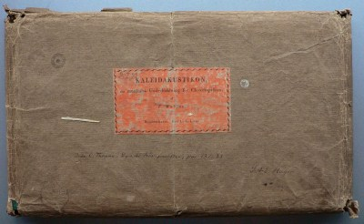
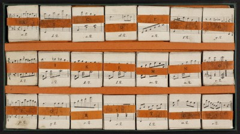

Kritisk beretning
Kildebeskrivelse
Kilde A
DK-Kk Kuhlaus Samling (Fog nr. 215), mu 6411.1250
Kilde A i original indpakning
Det Kongelige Biblioteks eksemplar af Kaleidakustikon er pakket ind i kraftigt, mørkebrunt pakkepapir. Midt på forsiden af pakken er påklistret en orange etikette påtrykt teksten KALEIDAKUSTIKON, / en musikalsk Underholdning for Claveerspillere, / af / F. Kuhlau. / Kjöbenhavn. Hos C. C. Lose. Øverst til venstre på etiketten er tilføjet signaturen B.I.22. med blyant. På pakkepapiret er under etiketten tilføjet med sort blæk Vide C. Thrane: Danske Komponister, pag. 137-138 / S.A.E. Hagen.
Kilde A i æske uden låg
Kaleidakustikon består af 21 bunker af kort i kraftig karton, arrangeret i tre rækker i en papæske med målene 19,7 x 35,8 x 1,7 cm. Æskens vægge er beklædt med grønt lærredsbind. Et indlæg af orange pap holder kortbunkerne på plads. Æsken kan også bruges til at holde de valgte kort og f.eks. stilles på et nodestativ. Låg og instruktioner mangler.
Hver kortbunke er forsynet med et mavebælte af orange karton med kortbunkens bogstav (A...V) påtrykt. H-bunkens mavebælte er ikke originalt og er uden bogstav. Hver bunke indeholder 11 kort, nummereret med bunkens bogstav og tallene fra 2 til 12 (dvs. alle de pointtal, der kan opnås ved at kaste to terninger), altså f.eks. a.2 til a.12 i A-bunken. Kortene h.3 til h.10 mangler. Hvert kort måler ca. 5.4 x 4.8 cm. Fremstillet i litografi.
Kilde B
Privateje(?)
Proveniens: Jean-Paul Morin
Det p.t. eneste andet kendte eksemplar blev solgt på en auktion over Jean-Paul Morins samling af kuriosa den 19. december 2012 i Paris. Det har desværre ikke været muligt at komme i kontakt med dette eksemplars nuværende ejer.1
Auktionshusets foto af det hollandske eksemplar muliggør dog en delvis kildebeskrivelse:
Kortene ligger i en æske i orange lærredsbind. Låg og bund er tilsyneladende hængslet sammen ved hjælp af samme orange lærred. Hver kortbunke holdes sammen af en hvid papir- eller kartonstrimmel uden påtryk. Der er ingen inddeling af æsken i tre rækker som i kilde A. Æsken kan derfor ikke i sig selv fungere som holder for de udvalgte kort, men i æsken ligger en plade eller et stykke pap beklædt med blåt papir eller lærred, som ser ud til at kunne fungere som kortholder ved at kortene stikkes ned i tre lange lommer på pladen.
Billedet gengiver kortene K2-K3 og K5-K12 i deres helhed foruden (første side af) brugsanvisningen. Se spilleregler for en fuldstændig gengivelse af brugsanvisningens tekst. Dette eksemplar mangler ifølge auktionshusets beskrivelse et enkelt kort.
Kildevurdering
A er det eneste eksemplar, som udgiverne har haft adgang til, og udgør derfor naturligvis hovedkilden. Yderligere eksemplarer kan supplere udgaven, hvis det skulle lykkes at lokalisere dem.
På baggrund af auktionshusets foto udgør B dog hovedkilde for spillereglerne, som mangler i A.
Revisionsberetning
I den interaktive skærmversion gengives kortene i faksimile (fotografisk gengivelse), uændret bortset fra en mindre beskæring af hensyn til den ensartede placering af kortene.
Revisionerne nævnt i det følgende er foretaget i udgavens XML-data og er derfor gyldige i såvel XML-visning, PDF-visning og MIDI-afspilning. Når der i det følgende henvises til "udgaven", refereres der til disse redigerede formater, ikke den fotografiske gengivelse af kortene.
Kortene h11 og h12, som giver tonearten f-mol i stedet for F-dur i miderste række (H-O), er i A noteret med tre b'er (for h, a og d) i stedet for fire, således at de efterfølgende kort i rækken læses i melodisk f-mol, altså med ledetonen e i stedet for es. [Af tekniske grunde er denne notation i udgaven moderniseret til almindelig f-mol med fire faste fortegn, men med løse opløsningstegn indsat for alle e'er i rækken.]
Forkortet notation med hvide nodehoveder af gentagne ottendedelsbevægelser i venstre hånd i bunkerne I-N er i udgaven skrevet ud i ottendele.
Noder
| Kort | System | Bemærkning |
|---|---|---|
| a6 | h.h. | A: node 6: b tilføjet med blæk |
| k5 | h.h. | B: forslagsnoder til node 2: 32.delsnoder i stedet for ottendedelsnoder |
| k7 | h.h. | B: forslagsnoder til node 2: 32.delsnoder i stedet for ottendedelsnoder |
| o2...o12 | dobbeltstreg emenderet til afsluttende repetitionstegn som følge af repetitionstegn på H-kort |
Spilleregler
| Punkt | Sætning | Bemærkning |
|---|---|---|
| 5 | 2 | Afsluttende komma emenderet til punktum |
| 6 | 2 | Buschstaben emenderet til Buchstaben |